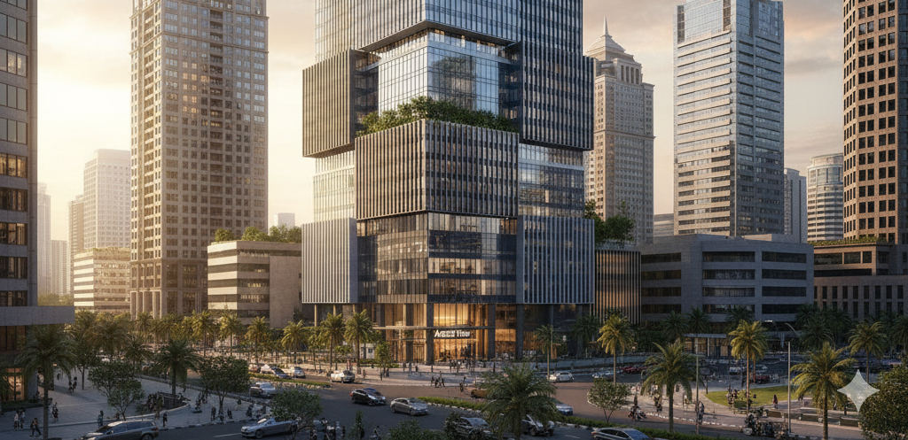

Portofolio Pilihan
Setiap proyek adalah cerita unik tentang kolaborasi, keahlian, dan dedikasi kami terhadap kesempurnaan desain.

Residensial
The Elysian Villa, Bali
Sebuah perpaduan sempurna antara kemewahan tropis modern dengan kearifan lokal.

Komersial
Ascent Tower, Jakarta
Desain fasad ikonik yang mendefinisikan ulang cakrawala pusat bisnis kota.